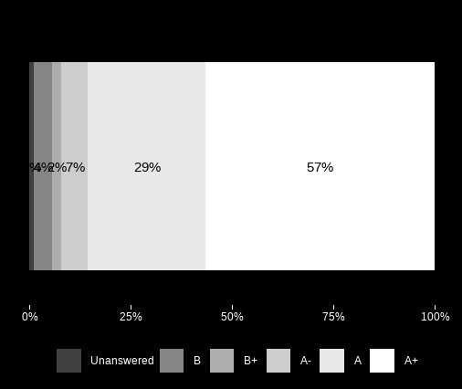

Reviews from students
LAST UPDATE: JANUARY 2026
I love teaching. I love spending time in class discussing interesting topics and having conversations with students. It's one of my favourite parts of being a young researcher. I often think about how to be a better educator, set up tutorials, and create a positive environment in the classes I teach. How can I grab and maintain students' attention (especially at 8.00 am on a Monday)? How can I explore a concept from a different perspective than the one provided in class by professors? How can I create and encourage a class environment without a strict hierarchical structure?
I have ideas and opinions that address these questions, but to determine if I am on the right track, I need to hear directly from students. I do so informally in class, having face-to-face conversations, so I can tailor tutorials on the fly independently to each class. However, people might have opinions that they do not want to share in person, so I have also been collecting reviews and feedback through an *anonymous* and *voluntary* survey, which I present at the end of each semester. I keep it short and light, knowing that no one wants to spend too much time answering questions, especially when the exam period is approaching. I use the feedback from the survey to track wider trends, ideas, and opinions, and use these to plan for the following year.
We all know that often feedback is not really used to change anything. Most of the time, it is just assessed by administrators to check if KPIs have been met. I hate that. So, in the name of transparency and self-accountability, I decided to post all the anonymous feedback here (this is clearly stated in the survey). In the page below, I try to summarise the overall reviews, and I address the points I believe are important for me to consider or reply to.

TL/DR
Students appreciated the enthusiasm, energy and environment I created in class. I put lots of effort in reducing the power gradient during class time and promoting cooperation[1]. This effort seems to have paid off throughout the years. It appears I am a morning person (indeed I am), and being energetic helped with engagement during early morning tutorials. I sometimes speak too fast when I talk about something I enjoy, but I seem to keep this trait under control.
Students' marks
I like to give students the opportunity to "sit on the other side of the desk" and have the opportunity to review my work with a grade. The first questions are a benchmark to see how I am doing compared to the other classes they take. The reason I frame the question as a comparison is not to be in competition with other educators, but it is because it is hard to provide a grade without a baseline comparison. For instance, grading an essay is an activity that does not happen in a vacuum, but it is influenced by previous grades and expectations derived from experience with similar work. I want students to think about their unique experiences and backgrounds and place my work within that context.

84% of those who completed the survey considered my tutorials *above average* according to their experience. The reminder considered them within the average range. This is a great benchmark that shows that my classes are (a) positively different or at least similar to other classes and (b) appreciated by students.
The second question asks literally for a grade. I think it could be a cathartic moment being able to grade the person who has been grading your coursework. Moreover, if taken seriously, grading can make you reflect on the way you evaluate experiences. Was something really that good or that bad? Were the tutorials really so dull or so exciting? Maybe I was just tired, or maybe I just liked the content but not the delivery.

The grade aligns with the coarse benchmark above. 93% of students who completed the survey would be happy to grade my work within the A range (A-, A, A+), and over half of these grades are an A+. Although we often dislike skewed distribution, I think this is a good one. There are no grades below a B, so I think I have happily passed my educator exam for now.
What students appreciate
There are a few core trends that started to come up over time. Firstly, students appreciate being in an environment that supports and encourages asking questions and sharing thoughts, ideas without worrying. I'm very glad this is a shared sentiment in my classes, as this is one of my personal goals towards an ideal cooperative, collaborative, and welcoming class.
S: I appreciated how interactive they were, and engaging -not just a recap of lectures but the ability to apply it more practically or discuss material further along. I also really enjoyed how there wasn't necessarily like a "hierarchy" established between tutor and student and you kinda broke that and made it feel easier to approach you or discuss material. (Like when we had the small group discussions all sitting together). I felt like you also were able to understand how us students normally feel with certain activities, and how to approach a certain activity in a less intimidating way.
S: I’ve had the pleasure of being in your tutorial stream 2 years in a row and have enjoyed it both times. You encourage discussion so naturally and are incredibly supportive when students share their ideas even if they’re not necessarily the answer you were looking for. I really appreciate the depth with which you explain the lab topics and truly think my learning has been much improved in the lab sessions!
S: Support! You were very supportive and accurately explained what was required to do well in this class, and explained what we did not need to know as extensively - which was much appreciated as often times labs can be seen as just an overload of information.A second topic seems to be engagement. All those years spent performing as a magician are paying back now. I've always treated teaching as a magic act. You need to be able to draw and maintain attention, convey a story and have fun. I always find interesting how some of the most popular "academic" videos are of professors doing something unexpected and interesting. I think we (educators) should all experiment in our classes with the way we present, the way we interact with students and the activities we do.
S: I think you had great energy, especially for such an early lab. It was easy to get engaged and focus because of the passion. I also appreciated how down-to-earth you were, as it made it easy to go to you for help if need be.
S: Very engaging (even though it was 8am)
S: Very engaging, always ready to answer questions and help us when needed.
S: Really engaging, even though I hated the mini presentations idea initially it did help me prepare for a presentation assignment in another paper! You are very knowledgeable, helpful and clearly passionate about teaching others about the brain!
A specific reply to the last comment. I totally understand how mini-presentations might not be a hit for many people. Public speaking sucks, especially when you don't have much time to prepare. However, as I explain in most tutorials: the only way to improve public speaking is... by speaking publicly. There is no real way around that. To be honest, presentations are not necessarily my own idea, but I hope that by creating a welcoming environment, I'm making them less stressful. The way I see it is that tutorials are the perfect opportunity to practice presenting, as we are among people we know and there is no judgment involved. I'm glad they helped you with another paper!
S: Integrating mini presentations which helps us build our public speaking and be more confident with our knowledge.
What students think I should do better
In this section, I will try to reply to some of the comments I believe are interesting, or that report sentiments shared by different students.S: I thought you were excellent, the only reason I didn’t give you an A+ is because I felt like you could could go even further by dumbing it down and putting course content into other contexts so it would be easier to learn/retain.
This is a great point. Sometimes I'm scared of providing external context/examples because my areas of expertise and interests are usually technical, and I don't want to scare people off from a topic. However, next year I'll do my best to provide external context. Maybe I can get a better sense of everyone's interests and try to also draw from the knowledge of other students in the class. I like the idea of students helping other students (and me) understand something in more detail.
S: Maybe instead of presenting in front of the class you could do a group discussion activity instead.
S: Sometimes the discussion time in tutorials felt too long and often we'd finish the task and end up going off task. Maybe less small group discussion and then a longer period for class discussion would have been more to my personal preference, but its not a major issue cause there was normally plenty of time anyway.
Indeed, discussions are something I need to work on more. I tend to lean towards small group discussions because they tend to engage more students, especially those who are more afraid to talk in front of everyone. However, the downside is that people do not get to hear possibly interesting thoughts and ideas that have been shared within other groups. Next year I will try to (1) add more discussion time and (2) shortening the small group discussions and giving more space to a class discussion. Just one note, as I'm not totally in control of the lab material and activities, sometimes it's just not possible to add activities that have not been scheduled. Some professors are happy to give us more freedom in how we run the labs, but others are stricter on what they want us to do.
S: Rather than having us get up and present, make more interactive lessons like the aphantasia ones where we did a little memory test. Presentations aren't helpful, there should be another more interactive way. We don't have enough time to do research or to prepare and present and the entire class ends up repeating each other or telling false info.
I don't agree that presentations are not useful (see comment in the section above). However, I agree that tutorials should be more interactive. This is kind of a tricky point to address. I agree with you, there should be more interactive ways to run tutorials. Last year, I pushed towards this direction by crafting the simulated EEG-based liar detection activity for PSYCH 305. This year, I created and organized the activity with the portable EEGs. However, I need to strike a balance between what I would like to do and what the university is happy to fund. The two activities above required quite a bit of time to be organized, some of which was out of my free time. In the background, I'm trying to push for making psych tutorials real laboratories. However, I am not the one making the final decisions, nor the one deciding how many hours tutors are paid. What I should do, though, is find ways to sneak in interactivity during standard tutorials. These activities should be easy to organize and incorporate with professors' requirements. I'll think of some ideas during the summer!
S: Only suggestion I have is to speak slower. Your excitement and English are amazing, but when you speak really fast with excitement, it made it difficult to understand and keep up sometimes. Occasionally you start to rush when you get excited, which is fun to see but it can lead to us missing certain points sometimes Honestly, thought you were amazing. Maybe you could just slow down sometimes with your explanations because it can be a bit hard to keep up with occasionally (not often) i couldn’t understand what you were saying when you spoke fast.
S: Maybe speaking a little bit slower is better Talking a bit slower would help a lot for better understanding :)
All these comments are from 2023. I totally agree with you all, I know I let myself be taken by the excitement of the topics. Plus, Italians speak fast, so my background does not help. I hope this year I've done a better job on this. No one pointed this out. If anything, someone highlighted that I have made changes for the best (below). However, I have caught myself speeding up, and it is something I need to pay constant attention to. So I'll leave these comments as a reminder for the next year.
S: Nothing! I think you truly have taken into account feedback from previous years (or perhaps I am just used to your teaching style) and it’s been great.
Other comments
As my survey is meant to be quick, I leave the opportunity to express other ideas freely. Here is a complete list.[1] In aviation, there is a concept known as the cockpit gradient. This refers to the hierarchy and communication flow between the captain and the first officer: if the captain exerts too much dominance, first officers may hesitate to speak up, which can lead to errors or accidents. A more balanced or shallow gradient encourages co-pilots to share their ideas, improving overall safety. I believe the same principle applies in the classroom. Reducing the class gradient helps students feel more comfortable and confident in sharing their thoughts and opinions without fear of judgment.